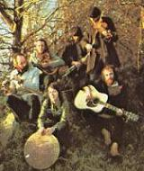

Celtic Lyrics Corner > Artists & Groups > Bothy Band
|  | Bothy Band |
| Members : | Peter Brown, Kevin Burke, Mícheál Ó Domhnaill , Tríona Ní Dhomhnaill , Paddy Keenan, Dónal Lunny & Matt Molloy |
| Albums : |
1976 -
Old Hag You Have Killed Me
1988 - The Best Of The Bothy Band 1996 - Live In Concert |